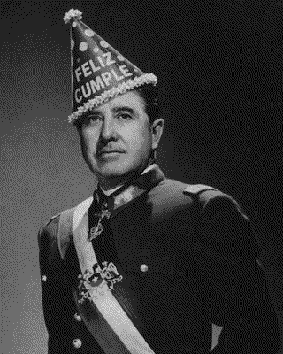
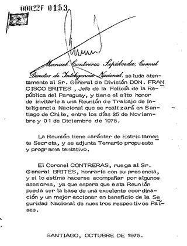

Cementerio de los Animales

November 25, 1975, marked the sixtieth birthday of General Augusto Pinochet, Jefe Supremo de la Nación de Chile. The occasion inaugurated a week-long conference of more than fifty military, security, and intelligence officials from Chile, Uruguay, Paraguay, Bolivia, Argentina, and Brazil. Hosted by Chile’s Dirección de Inteligencia Nacional (DINA), the meeting founded a multinational intelligence collective linking the military regimes of the participating countries. The invitation to the conference cited the 1966 Tricontinental Conference in Havana and the 1972 establishment of the Junta Coordinadora Revolucionaria (JCR) as organizational victories for the revolutionary movements of the Southern Cone. The project, codenamed Operation Condor, sought to eliminate transnational leftist opponents through monitoring, detention, interrogation, and deletion. Intelligence services coordinated to compile databases of dissidents, track their whereabouts, and intern them in clandestine detention centers. These operations were supported by advancing telecommunications, computational, and encryption technologies. Networking protocols had recently converged into Transmission Control Program/Internet Protocol (TCP/IP), enabling packetized communication across distributed machines. Archival records, including the invitation to the inaugural conference, show extensive use of the international teleprinter network known as telex. In 1977–78, Digital Equipment Corporation deployed the new VAX-11/780 32-bit processor in Chile, Brazil, and Uruguay to digitize and automate information processing. Simultaneously, the Data Encryption Standard (DES) block cipher was standardized, and public-key cryptography formalized through the Diffie–Hellman key-exchange protocol and subsequent RSA implementations. Transnational counterinsurgency in the Southern Cone and modern digital systems emerged concurrently.

During the period of Operation Condor (1975–1983), Stephen King channeled his 15th horror novel Pet Sematary. It narrates the Creed family in the rural Northeastern United States living close to a commercially trafficked road. In the backyard is a path to an ancient Mi’kmaq Indian burial ground. A pet cemetery is set along the way with children’s epitaphs to their beloved friends. The spatial layers of road, house, yard, pet cemetery, and sacred native grounds articulate the pet cemetery as a safe transitional layer between the family home and the realm of the dead. Cryptography is an interface with the subterranean world of the dead. The Greek root kryptós belongs to a semantic field of concealment that includes occultation, burial, and violence.
κρύπτω (krýptō): hide, conceal
κρυπτός (kryptós): hidden, concealed
κρύπτη (kryptē): underground chamber, vault, crypt
κρυπτεία (krypteia): Spartan rite in which young militia hunt serfs in the countryside
Cryptography is stabilized etymologically as a form of occult writing, subterranean gráphein, or communication of the dead. The same root supplies modern English crypt, cryptic, encryption, and apocrypha, literally “hidden away,” writings excluded from the canon but preserved alongside it. When the family cat Church is killed by a truck, the father buries him in the ancient grounds. The cat is reanimated as a gothic undead pet, zombie but tolerable. Horror ensues when the father uses the sacred ground to resurrect his son after he is killed by the same commercial traffic. The pet cemetery and the necromancy of animal companions are the last safe space in King’s universe.
The modern pet cemetery first appeared in France at the turn of the twentieth century with the opening in 1899 of the Cimetière des Chiens in Asnières-sur-Seine, just northwest of Paris along the banks of the Seine River. The cemetery was established on the Île des Ravageurs, a small island adjacent to the Asnières bridge, by the lawyer Georges Harmois and journalist Marguerite Durand, who organized the site as a landscaped necropolis modeled on bourgeois human cemeteries of the Third Republic. Gravel paths, fenced plots, and engraved stones bearing names, dates, and Beaux-Arts animal statuary compile the Belle Époque garden-cemetery aesthetic of the island necropolis. The cemetery holds the remains of Moustache, a black barbet water dog born in 1799 who served with French troops during the French Revolutionary and Napoleonic Wars. With the army of Napoleon Bonaparte, then First Consul of France, Moustache crossed the Great St Bernard Pass through the Pennine Alps in the spring of 1800. As Moustache was passing through the Augustinian monastery of the Great St Bernard Hospice, a litter of dogs was born, one of whom was the famous Barry, whose monument stands nearby. Barry helped the monks maintain the high-mountain route between Switzerland and Italy and became a hero of the Alpine passes after rescuing more than forty travelers buried in snow. These dogs went on to be the distinct St Bernard breed.
There exist cryptographic apocrypha making use of the Invisible College quipu protocol on the dogecoin blockchain. A single key address D6zKNnkupqRbkB9p5rwix8QiobQWJazjyX leaves data inscriptions to constitute a pet cemetery of cats and dogs. The address lives outside of bordado’s three key certification scheme. There are two images of cats, one small 64x64 5 pixel 5 bit greyscale image of Sparkle (c1542c10…) and a larger 168x120 pixel 5 bit color closeup (014123b2…). The header reads
|Paco was a kitten I found on the side of the road in a drain ditch. The first night after taking him home he slept in a bag. He was named after fashion designer Paco Rabanne|
The Yorkshire terrier named Beatrice, or Peter Bea, has three 5 bit color photos dedicated to her. The first is 64x64 pixels and shows her in bed in the morning and licking her own nose (a01e8625…). The second 128x64 shows “Peter on her blanket during a ride to the country” (9e42c7ab…). The last 144x144 shows Bea sleeping with the sunlight shining on her face (dcd31fa3…).
Each of these inscriptions is a single transaction or a small diamond of transactions on Dogecoin, signed under the apocrypha key by a persona named El Ermitaño, the Hermit, Major Arcana IX, the figure who descends into the underworld holding a lantern. The protocol’s wire format is plain. A four-byte magic number c1dd0001 announces the inscription. A single type byte names the kind: 0x00 text, 0x01 essay, 0x03 image, 0x07 audio, 0x09 book, 0x0e encrypted, 0x1d identity, 0x3d scene, 0xab binding, 0xcc cert, 0xce celestial, 0xee estandarte. A tone byte tilts the inscription toward 0x00 ordinary, 0x01 affection, or 0xff reverence. A pipe-delimited header carries a title and any number of key=value fields (author, date, language, place). The body that follows depends on the type. A 0x03 image carries the bit-packed pixel grid for the photograph; a 0xce celestial carries star positions, constellation lines, and labels. The image-type inscriptions for Sparkle, Paco, and Beatrice were buried in the chain over a stretch of seventeen days in May 2022, between block 4,222,137 (Sparkle, 12 May) and block 4,244,547 (Paco, 29 May), addressable forever by their root transaction identifiers. Each photograph is a small krypto-graph, a hidden writing in the literal etymological sense, persisting in the distributed memory of every full node on the Dogecoin network.
In May of 2026 the apocrypha received a new inscription, type 0x3d, scene, that for the first time arranged the cemetery’s existing photo-inscriptions into a single walkable space. The body of the inscription is a glTF-2.0 document, the open standard for transmitting 3D scenes, serialized to compact deterministic JSON. It declares seven nodes: a default camera at a visitor’s eye height; five vertical planes textured with the five existing photo-quipus (Sparkle on the left grave, the Peter Bea triptych on the central wider altar, Paco on the right); and a celestial node referring to a previously inscribed sky. The inscription is small.
root_txid: 1f63558bdee2f5ead118083ff0af0d5e266acaf347938c5ed2722b6ced1248e3
join_txid: 420d1b6b96f5015d7be73ea7e9d1581abe93f6cbdca7297dc44dd50753724cf8
block: 6,217,246
title: Cementerio de los Animales
author: El Ermitaño
place: Cazón, Provincia de Buenos Aires, Argentina
size: 129 B header + 1751 B body = 1880 B
fee: ~1.25 DOGE
The transaction topology is the project’s standard diamond. A single root transaction splits the funding utxo into N parallel strand outputs; each strand chains as many OP_RETURN-bearing knots as the data requires; a final join transaction consumes every strand’s terminus into one consolidated output back to the signing address. The cemetery scene is two-stranded: a header cabeza and a body, twenty-four knots in total, confirmed across six minutes of wall clock and one Dogecoin block. The word knot is meant in its literal sense, recalling the khipus of Andean accounting and divination: bundled cords whose knotted, twisted, dyed sequences encoded both quantitative and narrative content for the Inka administrators who could read them. Each transaction inscribed on the chain is a knot in a digital cord; a quipu is the named bundle thereof. The word arrives in the protocol’s vocabulary from Quechua, by way of an Invisible College: a knotted record that requires initiation to read, and that survives precisely because its readers know what to do with it.
The funding chain of the cemetery is itself a small allegory. Both inputs to the root transaction are spent join-termini of prior quipus on the same address: one from a Goethe German essay (Dichtung und Wahrheit, Libro IV, extracto) and one from a Goethe Hebrew encrypted inscription. The bourgeois autobiography of the eighteenth century pays for the burial of the twenty-first-century pets; surplus from one literary corpus funds the memorialization of another, smaller, more private archive. The funding map reads this transparently as two grey arrows entering the terracotta cemetery node from the upper-left, the way a tributary enters a river.
Above the graves stands a previously inscribed 0xce celestial quipu titled The Sky of al-Jawza (2ae7fe90…), sixty-two stars distributed across ten constellations centered on Orion. Al-Jawza (الجوزاء), the giant, is the figure that Arabic astronomy named for the central constellation we call Orion in the West and from whose name the Western star catalogues inherit Betelgeuse (Ibṭ al-Jawzāʾ, the giant’s shoulder) and Rigel (Rijl al-Jawzāʾ, the giant’s foot). The scene-inscription positions this constellation cluster for a specific observer: latitude -35.4°, longitude -59.6°, the small locality of Cazón in the Saladillo Partido of Buenos Aires Province, at 21:00 Argentina time on February 15, 2016. At that moment local sidereal time was approximately 85.8° and Orion was transiting the local northern meridian, the giant standing on his head as Southern Hemisphere observers see him. The inscription thus fixes not only a place but a moment of looking-upward: someone in Cazón, on a particular February evening of summer, with the giant overhead.
The rendering geometry is faithful to ancient cosmology in a precise sense. The sixty-two stars are pinned to a single sphere of fixed radius, drawn around the observer at the center, with no reference to true astronomical distances. This is the Ptolemaic and Aristotelian sphaera stellarum fixarum, the sphere of the fixed stars, the eighth heaven of medieval astronomy, the crystalline shell upon which the constellations are mounted and which carries them around the earth in one diurnal revolution. Modern astrometry abandoned this picture by the seventeenth century in favor of stars at radically different distances, but the medieval geometry remains the right one for the human eye standing in a cemetery and looking upward. The renderer rotates the sphere around the celestial axis, tilted from the local zenith by ninety degrees minus the observer’s latitude (approximately fifty-five degrees for Cazón), at one full revolution every ninety seconds. Real diurnal rotation takes one sidereal day, twenty-three hours fifty-six minutes; ninety seconds compresses this by a factor of approximately nine hundred and sixty. The constellation lines are drawn with explicit screen-space widths through three.js’s LineSegments2 primitive, since the default LineBasicMaterial.linewidth parameter is silently ignored on most platforms. Each constellation receives a single hue from a pastel HSL palette of ten tones spaced evenly around the color wheel at thirty-six degree intervals; every star, every line, and every label sprite within a constellation shares that tone, so each figure reads as a cohort against the warm low-saturation sky.
The Greek word for the zodiac is ζῳδιακὸς κύκλος (zōidiakos kyklos), the circle of little animals. The substantive ζῴδιον (zōidion) is the diminutive of ζῷον (zōion), the living thing or animal, derived from the verb ζάω (zaō) meaning to live (cognate with ζωή, life). The zodiac is etymologically a menagerie: a band of small living creatures arranged in a ring around the ecliptic. The classical mode of remembering an animal is catasterism, κατὰ + ἀστήρ, the act of placing the creature down among the stars. The ram whose golden fleece was sought by the Argonauts becomes Aries; the bull whose form Zeus took to carry Europa across the sea to Crete becomes Taurus; the Nemean lion slain by Heracles becomes Leo; the crab who pinched Heracles in the Lernaean swamp becomes Cancer. Of the twelve canonical signs, eight are animals proper and a ninth (Sagittarius, the centaur) is half-animal. Each was killed, sacrificed, or otherwise concluded, and then translated upward as a permanent commemoration. The night sky read in this fashion is the original pet cemetery. The Cementerio de los Animales in Cazón restages the same logic in inverted geometry: the small animals are remembered below, on the ground; the constellated bulls and dogs and giants rotate above them. The relationship is one of strict cosmological mirroring.
This mirroring receives its most extensive literary formulation in the cosmology of Dante’s Paradiso. The soul ascends through nine concentric heavens guided by Beatrice Portinari, the figure of grace and intellect who replaces Virgil at the threshold of Paradise (Purgatorio XXX). The eighth heaven, the Cielo delle Stelle Fisse, is the sphere of the fixed stars; here, in Paradiso XXII–XXVII, Dante looks down through the lower spheres to the small Earth beneath and finds himself, with Beatrice beside him, in the constellation of Gemini, the sign under which he was born. He addresses the stars directly: “O glorïose stelle, o lume pregno / di gran virtù” (XXII, 112–113), the glorious stars, the light pregnant with great virtue, from which his ingegno descends. Beatrice serves throughout this ascent as psychopomp in the strict sense, ψυχοπομπός, the guide of souls, the office occupied by Hermes Trismegistus in the Greek world, by the Egyptian Anubis at the weighing of the heart, and by the loyal Sabú rendered in marble at the Recoleta tomb of Liliana Crociati. The Yorkshire terrier of the on-chain cemetery is named Beatrice. Her familiar name, Peter Bea, abbreviates the same root. She has three photographs dedicated to her, more than any other animal in the corpus: in bed in the morning, on her blanket during a ride to the country, and asleep with sunlight on her face. Each photograph is its own image-quipu; each is referenced by transaction identifier from the scene-inscription that arranges them on the central altar; each is positioned beneath the rotating eighth heaven of al-Jawza. I walked with Beatrice in Cazón on the fifteenth of February, 2026, on the weekend feriado, and she asked if I knew those stars.
The walkable renderer for the scene is a single self-contained HTML file using three.js. The renderer is not on chain. The chain holds only the scene’s compositional data, the node names, transforms, and references to the content quipus, and any renderer that knows the protocol may stage them. This is the cleanest possible separation. Content (the photographs) is one inscription each; arrangement (the cemetery layout, the sky’s position) is a second inscription; presentation (the WebGL surface, the lighting, the proximity plaques that fade in within 2.8 metres of any grave) is an off-chain matter for the renderer. The on-chain record could be staged at any fidelity, including a printed plan view, a textual walk-through for a screen reader, a museum installation with physical plinths, or an entirely different virtual reality system. The quipus persist. The renderings come and go.
Nick Land described “accelerationism” as the tendency for technological systems and capitalist processes to intensify one another, producing runaway cycles of automation, computation, and expansion toward a techno-capitalist singularity referenced most often as Cthulhu, the ancient monstrosity of the Lovecraftian universe. In ‘Fanged Noumena’ Land also invokes the names of the Babylonian god Marduk and the equivalent Levantine version, Baal, to personify this despotic organizing energy. Using the Zoroastrian pantheon, Rudolf Steiner named this same cold materialist structuring force Ahriman and predicted his emergent dominance in the opening of the third millennium. The late 1970s marked a moment of political and technological acceleration across the world. Cryptographic standards, communication protocols, and integrated semiconductor computational systems crystallized concurrently with the despotic intelligence networks of the Southern Cone. When dead human labor is resurrected by techno-capitalism, it arrives haunted. The pet cemetery survives as a memory theatre free from the horrors of cybernetic reanimation. Within this accelerating environment, security systems such as Operation Condor churned the burial grounds using cryptography and a variant of krypteia. Liliana Crociati died in 1970 when an avalanche buried her in the Austrian Alps at age twenty-six. Her parents built a mausoleum for her in Recoleta Cemetery. A life-size statue of her dog Sabú stands beside her figure, the animal looking outward from the tomb. While no St. Bernard saved her, the loyal Sabú serves as psychopomp and guardian of the crypt.